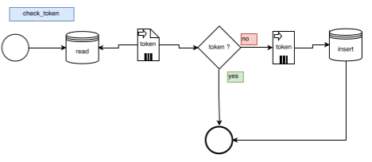

Spécifications techniques
1. Contexte
Le site web est developper from scratch en php 7 coté serveur, avec bootstrap et jquery coté client
2. Description générale
2.1 Arborescence

2.2. Rubriquage et workflow Tec 1.0 voir Req 1.0
Table des correspondances fonctionnels et techniques
| Req | Fonctions | Tec |
|---|---|---|
| 1.1 | Ajouter une publication | 1.1 |
| 1.2 | Sélectionner une publication | 1.2 |
| 1.3 | Modifier une publication | 1.3 |
| 1.4 | Supprimer une publication | 1.4 |
| 2.1 | Se connecter | 2.1 |
| 2.2 | Se reconnecter | 2.2 |
| 2.3 | Se deconnecter | 2.3 |
Les sections au format HTML sont appelées dans des inclusions en php, chaques parties du site se trouve dans une inclusions ou un fichier unique tel que les fichiers suivant: login.php, register.php, logout.php, les fonctionnalitées sont rangées par classes .
3. Fonctions de service
3.1 Ajouter une publication Tec 1.1 voir Req 1.1
La fonctionnalité d'ajout s'effectue via un CRUD implementé pour le projet, par la fonction
Une fois la fonction déclanchée, la commande SQL suivante est alors exécutée :
Le contenu est alors ajouté dans la base de données en reçevant un ID généré automatiquement, qui est de type "integer".

Les champs contenus dans la table members_post peuvent être remplit dans la base de données tel que :
| Champs | Type | Usage |
|---|---|---|
| "Category" | varchar(255) | Le champ définit le nom de la categorie et est obligatoire |
| "Title" | varchar(255) | Permet d'entrer un titre de la publication |
| "Description" | varchar(255) | La description de la publication doit être saisie pour être ajoutée à la base de données |
| "Content" | varchar(255) | Permet d'entrer le contenu de la publication, la saisie du contenu doit etre rediger pour etre ajouté a la base de données. |
| "Day" | datetime | la fonction datetime() en php est utiliser pour calculer la date de la publication |
3.2 Sélectionner une publication Tec 1.2 voir Req 1.2
Lorsque l'utilisateuraccede a la page du social wall, apres s'etre identifié, les publications seront afficher grace a
la requete suivante:
qui executera la commandes sql suivante :
qui selectionne les champs correspondants dans la base de données :
| Champs | Type | Usage |
|---|---|---|
| "Category" | varchar(255) | Le champ définit le nom de la categorie et est obligatoire |
| "Title" | varchar(255) | Permet d'entrer un titre de la publication |
| "Description" | varchar(255) | La description de la publication doit être saisie pour être ajoutée à la base de données |
| "Content" | varchar(255) | Permet d'entrer le contenu de la publication, la saisie du contenu doit etre rediger pour etre ajouté a la base de données. |
| "Day" | datetime | la fonction datetime() en php est utiliser pour calculer la date de la publication |
3.3 Modifier un article tec 1.3 voir req 1.3
L'utilisateur aura la possibilité de modifier une publication dans la base de données en cliquant sur l'icône via le Menu contextuel,
La fonction
est alors appelé
On effectue alors la fonction
qui sélectionne les champs correspondants dans la base de données.
puis la fonction
qui modifie les champs correspondants dans la base de données.
3.4 Supprimer une publication Tec 1.4 voir Req 1.4
L'utilistateur aura la possibilité de supprimer un publication dans la base de données en cliquant sur l'icône via le menu contextuel.
La fonction
Puis La commande SQL suivante sera alors executée:
4.4 Se connecter Tec 2.1 voir Req 2.1
L'utilisateur saisit les champs pour la connexion
la fonction suivante se déclanchera:La commande SQL suivante sera alors executée:
puis pour modifier l'identifiant du token de connexion :
4.5 Reconnexion Tec 2.2 voir Req 2.2
L'utilisateur pourra fermer la fenêtre sans se déconnecter puis la réouvrir et retrouver sa connection, si l'utilisateur ne s'est pas déconnecté alors :
la fonction suivante déclanchera:
La commande SQL suivante sera alors executée:
et vérifiera l'identifiant de connexion dans la base de données
4.6 Déconnexion Tec 2.3 voir Req 2.3
L'utilisateur pourra se déconnecter en cliquant sur le bouton prévu à cet effet:
déclanchera la fonction suivante:La commande SQL suivante sera alors executée:
Pour réinitialiser la valeur du token à "logged out"
4. Contraintes
4.1 Techniques
Les téchnologies utilisées pour le développement sont :
- Linux
- PHP 7
- MySQL
- Boostrap
- jQuery
4.2 Temporelles
4.3 Graphiques
5. Description des données
Ceci est la représentation de la base de données.